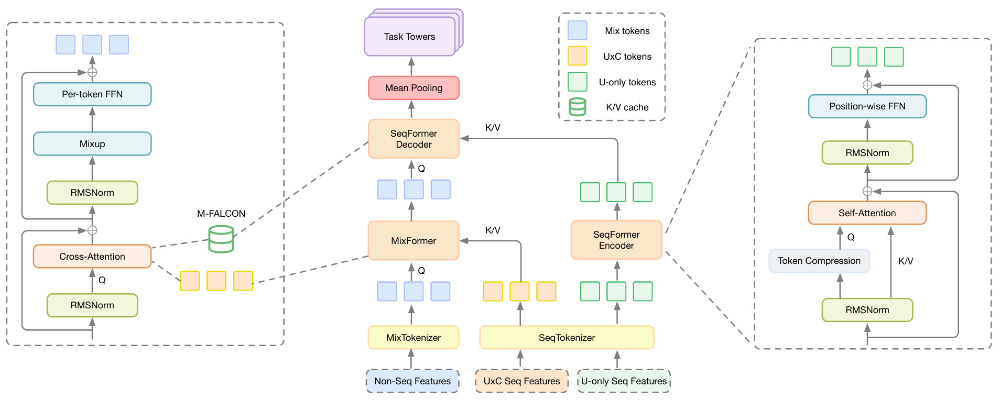
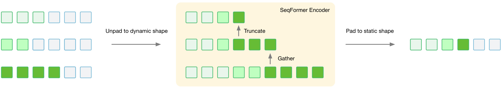
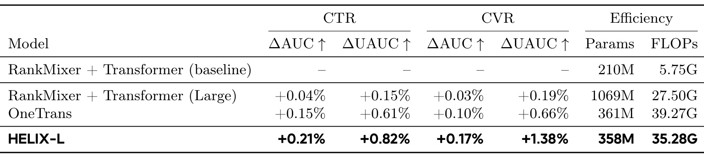
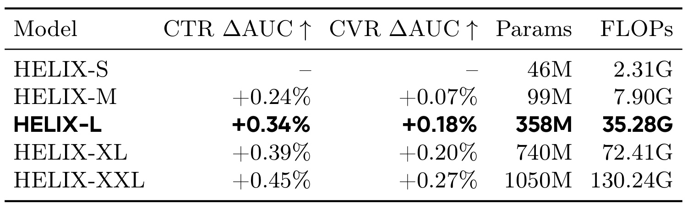
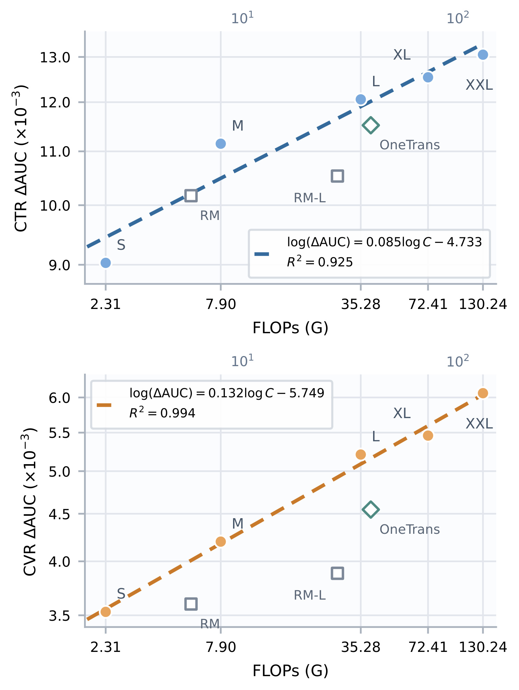
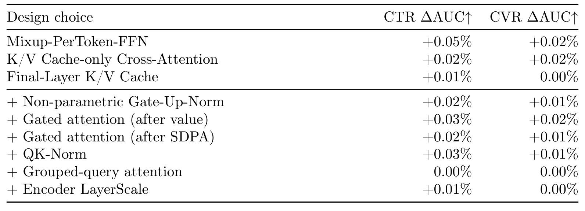
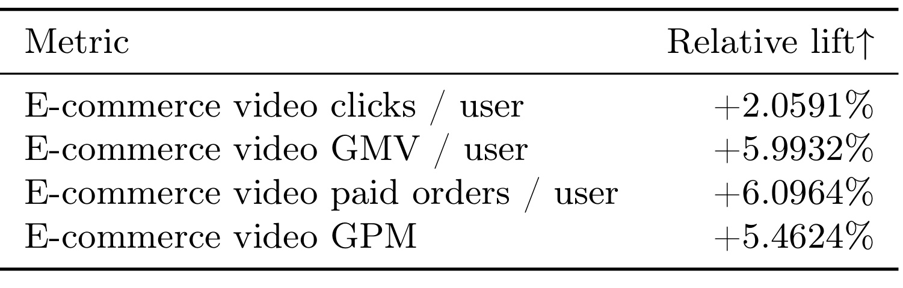
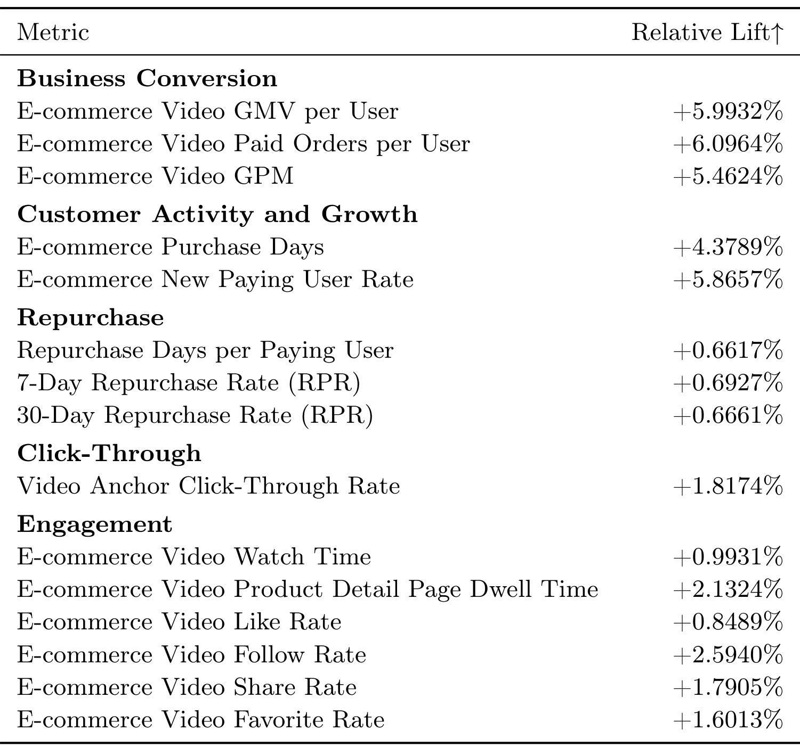

HELIX：让特征交互与用户序列联合扩展，同时保留可复用的用户计算
HELIX 是字节跳动 TikTok 电商视频推荐团队的一份工业排序技术报告，完整标题为 HELIX: Purified and Unified — Rethinking Feature Interaction and Sequence Modeling for Large-Scale Recommendation。核心贡献者包括 Yuntao Zheng、Miao Zhang、Yadong Ding、Yanchuan Tang、Lixiyu Chen。本文依据完整 17 页原文，包括主文、贡献者名单和补充线上指标，记录方法、实验及可复现边界。
论文原文。arXiv v1 首次提交为 2026 年 9 月 29 日 10:06:26 UTC；PDF 首页内部署名日期为 2026 年 8 月 27 日，两个日期含义不同，本次按公开提交时间纳入。代码状态：截至 2026 年 9 月 30 日，未核验到本文独立代码入口；这不等于断言作者没有开源。
单独扩展特征交互或序列建模会让另一条能力轴成为瓶颈，而候选信息反向写入用户序列又会破坏用户侧计算复用。
1. 背景和问题
1.1 工业排序同时面临两种不同的表达任务
电商视频精排不是一个单纯的文本序列预测问题。对同一用户的一批候选视频，模型既要理解用户长期和近期行为，又要组合视频、商品、上下文与用户属性等异构特征。前者回答用户当下可能有什么意图，后者回答这个具体候选在当前条件下是否值得点击、是否会转化，以及可能产生多大的交易价值。两类能力互相依赖：序列分支找不到细粒度意图时，交互层再宽也只能处理贫乏摘要；交互层不足时，复杂行为表示也未必能转化为针对候选的有效判断。HELIX 的出发点是，推荐模型的扩展不能仅沿着其中一条轴增加参数。
在特征交互方向，早期因子分解机、深度交叉网络等方法通过预设结构引入归纳偏置。这些结构在中等规模下有效，但增加深度和宽度以后，收益可能饱和，优化难度也随之上升。较新的 token 化交互骨干把不同字段的嵌入组织成少量 token，再通过残差块叠加交互能力，使参数规模和计算量更容易连续扩展。不过，字段语义本来不同：用户年龄、商品类目和上下文统计值并不是语言中可以近似共享同一种位置处理方式的词。直接把通用自注意力搬来，并不能自动保证异构信息能以最有效的方式组合。
序列侧也经历过类似变化。目标相关的注意力模型能够从用户历史中提取与候选有关的行为，但相对浅的聚合结构限制了历史内部关系的建模。更深的 Transformer 类网络有机会理解行为之间的组合、阶段和兴趣变化，代价则随序列长度增长。一个用户可能拥有点击、购买、浏览等多类行为，长度分布和信息密度又不相同。若简单将所有序列补齐到最大长度，再为每个候选完整重复编码，就会把大量计算消耗在填充位置和相同历史上。推荐系统的请求结构使这类重复尤其明显，因为一份用户历史通常对应多个候选，而非仅产生一次独立预测。
作者将已有统一骨干的不足分为三个层面。第一，自注意力未必是异构特征交互最合适的算子。第二，把行为检索和特征交互放进同一步注意力，会让混合 token 把部分注意力分配给自身，从而分散对行为证据的检索。第三，如果候选相关信息能够反向改变用户序列状态，那么序列表示就必须按候选重新计算，缓存复用随之失效。第三点把建模选择与系统成本直接连在一起：双向通信看似增加表达力，却改变了计算图的依赖关系，失去一次编码服务多个候选的可能性。论文真正需要解决的不是让图中的连线越多越好，而是让有价值的交互存在于正确的位置。
1.2 统一计算图为何必须保留依赖边界
HELIX 对输入的划分围绕“是否依赖当前候选”展开。第一类是用户、视频、上下文、交叉字段等非序列特征，它们组成候选条件化的混合 token。第二类是完全由用户历史构成的 U-only 序列，在同一请求的多个候选之间可以共享。第三类是利用候选信息构造的 U×C 序列，例如与当前视频相似的历史检索结果。这一类虽然形式上也是行为序列，但内容已经依赖候选，因此不能因为它带有“用户历史”字样就当作可共享输入。区分这两类序列，是后续所有缓存收益成立的前提。
这种设计也解释了标题中 purified 与 unified 的关系。统一意味着行为检索和特征交互在深度方向反复交替，而不是先得到一个固定序列摘要，再把全部工作交给交互网络。简化则意味着骨干去掉作者认为非必要的额外模块与辅助目标，保留序列编码、跨注意力检索和异构交互这些核心操作。它不是声称整个工业系统只剩三个层，也没有声称多任务目标、特征工程和服务栈都被消除。原文仍然联合预测点击、转化、交易价值等任务，最终还需要将多个预测组合成排序分数。
缓存设计带来一个更深的容量分配问题。若每个交互层都必须配套一个序列层，并各自保存一份缓存，那么两条能力轴的深度会被绑定。序列建模想加深，候选侧也被迫加深，而候选侧的成本需要乘以候选数。HELIX 选择只缓存最终用户状态，让多个解码层反复查询同一份信息。这样，序列编码可以承担更多计算，候选侧保持相对轻量，在表达质量和请求总成本之间形成不同于对称扩展的选择空间。单向信息流与末层缓存因此不是孤立的省显存技巧，而是决定模型如何扩大的结构条件。
阅读这篇论文时还应区分三个评价层次。离线 AUC 和用户级 AUC 衡量排序质量；每样本训练浮点运算量描述尚未摊销的计算需求；线上点击、交易额、订单等指标描述实际业务变化。三个层次互相关联，却不能直接换算。较小的相对 AUC 变化可能在作者场景中有业务价值，但不能据此认定别的业务也会获得同等转化提升。理论上的计算复用倍数也不等于端到端服务延迟下降倍数，因为内存传输、候选分支、批处理和系统调度都可能成为限制。
最后，这是一份来自实际工业部署的报告，而不是可直接复现的公开基准论文。作者公开了主要架构、若干消融、五档规模以及线上指标，但没有披露绝对生产 AUC、完整样本规模与全部训练细节。这让它很适合用于理解推荐骨干设计和工程取舍，同时也要求读者保留证据边界。本文会把原文给出的结果、从结构可推出的性质、以及尚待验证的迁移假设分开，避免把一条有吸引力的业务提升数字当成对所有推荐系统的普遍承诺。
2. 方法
2.1 三流输入与候选无关的用户状态
三条流的划分首先服从候选依赖关系。 非序列特征虽然包含用户字段，整体仍然为当前候选构造；用户独立历史则必须不受该候选影响。原文首先把精排预测写成以下形式，并在 token 化后维持三条独立流。这一表示把共享边界写在输入接口上，后面的缓存复用才能被视为同一模型函数的计算重用，而不是省略候选特征后的近似预测：
符号解释：用户为 $u$，候选视频为 $c$，$x_c$ 是非序列字段集合，$s_u$ 是 U-only 历史，$s_{u\times c}$ 是候选条件化历史；$f_\Theta$ 表示多任务模型，$T_m,T_u,T_g$ 分别把三类输入映射为 token。混合流 $X_c^0$ 有 $M$ 个维度为 $d_m$ 的 token，两个序列流的通道维度均为 $d_s$，但长度可以不同。这是原文式一、二的合并表达，任务预测之后仍由融合函数产生最终排序分数。 MixTokenizer 先把全部非序列字段嵌入与每类序列的均值池化摘要拼接，再按固定宽度切分，最后一组不足时补零。每组使用独立参数的 LayerNorm 和前馈映射。这种每 token 参数化保留了不同字段组的分布差异，也使一组 token 不必共享另一组的投影。作者特意选择 LayerNorm，因为可学习偏置能提供类似字段偏置的作用；其他归一化层使用 RMSNorm。因此，不应把“模型统一成 token”误读成“所有 token 参数完全共享”。序列均值在这里提供粗粒度背景，完整逐项行为仍保留在后续序列流中，两者并非互相替代。
符号解释：$E_s$ 是第 $s$ 类行为序列的输入嵌入，$W_s$ 把它映射到共同的序列维度，$P_s$ 是该序列内部的位置嵌入。原文式五先分别加位置，再按依赖类型拼接；没有为不同种类的序列强加一个统一时间顺序。两条拼接后的序列流前面还加入若干可学习 SINK token。它们提供注意力吸收位置，但不改变 U-only 与 U×C 的依赖属性。

图一应从底部三类入口向上读。左侧非序列特征经过 MixTokenizer 形成蓝色混合 token，中间黄色序列依赖当前候选，右侧绿色序列仅依赖用户。黄色流进入 MixFormer 的跨注意力，绿色流由 SeqFormer Encoder 独立编码，再把键值状态送给候选侧 Decoder。最上方对混合 token 做均值池化并进入任务塔。这个路径说明最终打分确实利用了两类行为证据，但不要求候选表示反过来更新绿色序列。右侧编码器图中的自注意力和位置共享前馈负责用户历史内部建模，左侧放大框中的跨注意力与每 token 前馈则负责条件化检索和异构交互，二者承担不同职责。 图中缓存箭头只有从用户编码状态指向候选分支的方向。这一点决定了同一请求中更换候选后，哪些节点需要重算：蓝色混合 token 和黄色 U×C 流需要重算，绿色用户编码及其缓存可以复用。因而图里的 M-FALCON 标识不能理解为所有序列都免费共享，它作用于访问共享用户缓存的那部分解码计算。一个常见实现错误是把候选类别、候选搜索结果或与候选相关的注意力结果提前写入用户编码器，这样即使接口仍称作用户缓存，其内容也已经失去跨候选等价性。架构图实际上给出了可复用状态的正确依赖边界。 还需要注意，多个 Decoder 块并不是读取不同深度的用户缓存。它们读取同一份末层键值，但查询 token 会随交互逐层变化，所以相同历史可被用不同的高阶查询反复检索。这保留了跨深度通信，又避免按解码深度增加缓存套数。图一没有展示所有服务调度细节，也不能据此推断实际请求耗时，但它充分说明了为何模型可以让序列分支更深而不同比例增加每个候选的交互工作。理解这条结构性质，比只把 HELIX 记作一组注意力层的新排列更有价值。
2.2 MixFormer：先检索行为，再做异构交互
MixFormer 每层用当前混合 token 查询 U×C 序列，然后用 MPTF 更新混合流。注意力负责检索，MPTF 负责交互。 两个操作并不需要竞争同一个注意力归一化分母；当前候选先从相关历史取证，再将证据与异构字段融合，下一层据此构造更丰富的查询。原文式七、八给出两个残差子层：
符号解释：$\ell$ 是 MixFormer 层号，$\widehat X_c^\ell$ 是加入行为检索结果后的中间状态；CrossAttn 从行为序列提取证据，MPTF 在异构 token 之间做信息混合和非线性变换。两个残差操作顺序执行，使行为证据先进入候选表征，再参与字段交互。最后一个 MixFormer 块不额外做输出归一化，因为后续 Decoder 入口已经归一化。 所有注意力采用查询键归一化、分组查询注意力与门控。对单头而言，核心计算可以写成：
符号解释：$X$ 提供查询，$Y$ 提供键、值及门控；$d_h$ 是头维度，$\sigma$ 是 sigmoid，$\odot$ 表示逐元素乘法，$W^Q,W^{KVG},W^O$ 是投影参数。该式对应原文式九。混合 token 的查询投影按 token 独立参数化，而序列的键值门控投影按位置共享。门加在值投影之后、聚合之前，因此会调节每个行为状态被汇入结果的内容，而不是只对聚合后的短查询流做筛选。 MPTF 不用注意力矩阵做字段混合。它先把每个输入 token 按通道切成 $M$ 块，再让第 $t$ 个输出 token 收集所有输入的第 $t$ 块，之后通过具有独立参数的 SwiGLU：
符号解释：$x_j^{(t)}$ 是输入 token $j$ 的第 $t$ 个通道块，要求 $d_m$ 能被 $M$ 整除；分号表示拼接，$W_t^g,W_t^u,W_t^d$ 分别为该 token 的门、上投影和下投影。它合并原文式十、十一。Mixup 本身不引入可学习参数，交互来自通道重排后的非线性映射。这样做保留了异构字段的专门参数，同时避免用二次规模的 token 注意力图承担全部交互职责。 这一算子也产生数值稳定性问题。不同 token 的投影尺度可能相差很大，SwiGLU 的两支相乘会进一步放大异常值。作者最初尝试裁剪极端激活，但阈值以下的激活仍可能较大；随后在门支和上投影支分别归一化，而可学习增益又可能把幅度放大。最终采用没有可学习增益的 Gate-Up-Norm，缩窄乘积和下投影的范围，以适应半精度计算。论文没有为这个改进单独给出完整公式，因此这里按操作说明，不补造归一化常数或声称已经复现其算子。它说明结构扩展还必须配套处理混合精度下的训练稳定性。
2.3 SeqFormer：压缩用户状态、共享末层缓存与摊销执行
U-only 编码器使用双向自注意力。它首先去掉填充位置，再按每种行为的预算选择近期状态作为查询及残差主分支；未被选为查询的状态仍可作为当前层的键值证据。后续层保留逐渐缩短的前缀，而不是每层对全部历史维持同样数量的查询：
符号解释：$S_u^e$ 是进入编码器第 $e$ 层的有效状态，$R_e$ 是保留的查询与残差状态，$k_s$ 是每种行为序列的预算，$L_e$ 是该层输入长度，$L_c$ 是最终缓存长度，$N_E$ 为编码器块数。这对应原文式十二、十六。首层使用分序列 Gather，是为了避免全局拼接后直接截断导致前面的序列占尽预算；以后缩短查询流时，当前层仍能从所有输入键值吸收将被移除的证据。
符号解释：$A$ 表示前述带查询键归一化的注意力，$Q_e$ 只来自保留状态，$K_e,V_e,G_e$ 来自当前全部有效状态；FFN 对序列位置共享参数。该合并式对应原文式十三至十五。压缩的是查询和向下一层传递的状态数量，并不意味着在这一层计算注意力之前就把其他历史全部丢弃。 最后一个编码器块省略自注意力、输出投影及位置前馈，仅将末层状态转换为门控键值缓存。Decoder 只重新计算查询，并反复读取这一份缓存：
符号解释：$P_{KVG}$ 是最终键值门控投影，$M_u$ 是缓存有效位置掩码，$C_u$ 是可共享用户缓存，式子对应原文式十七。这里保留掩码，是因为用户编码保持变长计算，而输出缓存又会补回固定最大长度供候选侧读取。
符号解释：$Z_c^0$ 是归一化后的 MixFormer 输出，$r$ 为 Decoder 层号；$A_{\mathrm{cache}}$ 只投影候选查询，不重复投影缓存键值，$M_u$ 屏蔽填充位置。该式对应原文式十八、十九。只访问缓存、不把混合 token 自身加入键值集合，使注意力专注检索行为，异构交互由后面的 MPTF 完成。

图三左边的不同颜色代表不同历史来源，空白位置代表填充。进入编码器时一次性去掉填充，把真实状态打包；中间第一次 Gather 从各行为流按预算抽取查询，后续 Truncate 进一步缩短保留状态；右边再把末层缓存恢复到静态形状。这个图同时展示了两种不同的节省：去掉填充减少原本无信息的计算，压缩查询减少继续向深层传播的状态数量。二者不能混为一种截断。前者原则上只移除无效位置，后者则有信息选择取舍，需要依据行为重要性分配预算，并让保留查询先读取完整的当前键值。 作者明确指出，打包后形状依赖数据，可能导致 XLA 反复编译，因此该路径关闭 XLA，改用融合的变长归一化、投影、SwiGLU、残差、Gather 和 Truncate 算子，注意力采用 FlashAttention-4 的变长接口。这不是一个只改模型定义就自然得到速度收益的方案；执行引擎必须能够沿编码器深度维持无填充表示，否则在层间不断还原填充会抵消收益。右侧补回静态缓存则是为了与候选侧服务路径衔接，说明动态形状并不必覆盖整个系统。图中的动态与静态边界体现了作者在编译稳定性和无效计算之间的工程折中。
这里还有一个容易遗漏的区别：输出缓存长度缩短，并不等于原始输入证据从未进入模型。第一层保留的近期查询可以读取未保留的历史键值，后续每次压缩也先进行当前层的注意力汇聚。所以该机制是逐层信息聚合与筛选，而非最开始只拿最近若干条历史。与此同时，它也没有证明所有被压缩掉的信息都能无损保存；均匀池化等替代方案在作者场景较差，只能支持近期行为选择的经验有效性。迁移到长期复购或周期性强的业务时，序列预算及保留顺序仍然需要独立验证，不能照搬为普遍最优规则。 原文还将跨候选复用与用户级训练统一为一个成本模型：
符号解释：$C_M,C_E,C_D$ 分别是 MixFormer、用户编码器和 Decoder 的计算成本，$n$ 是共享同一用户历史的候选或训练样本数，$p$ 是可摊销的用户编码占比。该合并式覆盖原文式二十至二十三。取 $p=0.95,n=100$ 得约 $16.8$ 倍理论计算加速，它不是实测延迟。M-FALCON 进一步让候选查询在内核里直接访问共享缓存，避免把一份缓存物化复制成候选批次大小；用户级训练则将同一用户的样本分组，共享一次编码。两种模式都不共享 U×C 或 MixFormer 计算。
3. 实验结果
3.1 与生产骨干对比：先对齐基准与计算口径
实验数据来自 TikTok 电商视频推荐内部工业数据。作者说明各模型使用对齐的数据、特征、预测任务与优化协议，报告点击和转化两个代表性分类任务。由于绝对生产指标不公开，所有质量数值均采用相对于指定基准的提升；参数是非嵌入参数，FLOPs 是用户级摊销之前的每样本训练浮点运算量。数据规模、划分日期、完整超参数与随机种子重复信息没有充分公开，因此这是可检查逻辑与表内比较的工业证据，尚不足以进行严格的第三方数值复现。

表一的参照点是标准 RankMixer 加 Transformer，包含两亿一千万非嵌入参数，每样本训练计算为五点七五十亿次。简单把该基线扩到约十亿六千九百万参数、二十七点五十亿次计算，点击与转化 AUC 只分别相对提高百分之零点零四和百分之零点零三。这个结果说明，在这套训练数据及协议里，仅把原有两段结构做大并不能有效转换新增计算。它支持作者提出的结构瓶颈，但不能证明所有两阶段架构都存在同样上限，也不能排除其他优化配置改变结论。
HELIX-L 使用三亿五千八百万非嵌入参数、三十五点二八十亿次计算，点击 AUC、点击用户级 AUC、转化 AUC、转化用户级 AUC 分别相对基准提高百分之零点二一、零点八二、零点一七和一点三八。这里全部是相对提升，不是增加对应数量的百分点；由于基准绝对值未披露，不能反推出最终 AUC。用户级指标变化大于总体指标，也不能直接解释为每位用户都获益，因为聚合权重与用户分布会影响两种统计量。
更有针对性的对比是表中的 OneTrans：它使用三亿六千一百万参数和三十九点二七十亿次计算，而四项质量增益均低于 HELIX-L。按表内数值计算，HELIX 的摊销前训练 FLOPs 约低百分之十点二，参数量基本接近，因此这比与小基线比较更能支持架构效率。不过这里的 OneTrans 是加入发表后优化的生产版本，不能把差值原封不动搬回原论文公开配置。与标准生产基线相比，HELIX-L 的原始训练计算其实约为六点一四倍，因此也不能笼统写成“HELIX 比现网便宜六倍”。额外质量收益与共享编码能否覆盖新增成本，仍需结合完整请求级执行方式判断。
3.2 五档模型规模：平滑收益与外推边界

表二把质量基准切换为 HELIX-S。小模型含四千六百万非嵌入参数，计算为二点三一十亿次；中型模型变为九千九百万参数、七点九十亿次；L、XL、XXL 分别为三亿五千八百万、七亿四千万、十亿五千万参数，对应三十五点二八、七十二点四一、一百三十点二四十亿次计算。扩展同时增加骨干宽度、深度和保留序列 token 预算，因此表中并不是只改变一个参数量旋钮。它表明一条完整配置扩展路径有效，却无法单独分离宽度、深度和历史预算各自的边际贡献。
点击 AUC 相对小模型依次增加百分之零点二四、零点三四、零点三九和零点四五，转化 AUC 相应增加百分之零点零七、零点一八、零点二零和零点二七。这与表一的数字看起来不同，是因为参照模型不同：表一对生产基线，表二对 HELIX-S。两个相对增益不能直接做加法，更不能以“同一 L 配置出现不同数值”为由认定实验矛盾。读规模表时，首先要固定分母，再比较同一列的变化方向。
从最小到最大，计算约增长五十六点四倍，点击相对提升只有百分之零点四五，这凸显工业排序收益与资源之间的精细权衡。作者强调大规模生产中很小的 AUC 变化也可能有业务价值，但这不意味着最大配置必然是上线最优方案。实际部署选择 L，而不是表内最大的 XXL，本身就提醒读者：离线质量曲线只是容量决策的一部分。在线吞吐、延迟、缓存大小、训练时效以及单位收益的成本都需要一起看。由于论文没有给出这些配置的完整成本收益曲线，本文不把五档表解释成一条可直接用于采购或服务容量规划的公式。

图二上下分别展示点击和转化任务，横轴是计算量，纵轴是作者报告的 AUC 增益量，两轴采用对数刻度。蓝色和橙色实心点对应五个 HELIX 配置，其他骨干只作为参照点，不参与拟合。作者给出的斜率分别为零点零八五与零点一三二，拟合优度分别为零点九二五和零点九九四。图的直接证据是：在已经测试的五档范围内，两项质量随计算增长整体平滑上升，最大档仍有增益。它不能直接证明继续把计算增加几个数量级时仍遵循相同规律。
需要将图中纵轴与前一张表区别对待。表二严格使用相对 HELIX-S 的提升，小模型一行因此为零；图二却给小模型一个正的增益位置，用来在对数域拟合。两者并不是可以逐点直接代换的数列。原文没有披露足够绝对生产指标来独立还原所有坐标的基准变换，所以本文保留作者绘图口径和拟合结果，不从图上的数值反推未公开 AUC，也不把拟合截距解释成可跨业务复用的常数。这种限制并不否认上升趋势，但限制了读者复算曲线与外推收益的能力。
图中标准 RankMixer 在低计算区域仍有竞争力，大规模 RankMixer 和 OneTrans 则落后于相近计算水平的 HELIX。它说明模型结构会影响新增资源的利用率，而非所有结构增加相同 FLOPs 就会得到相同收益。与此同时，仅凭几个参照点不能给所有架构建立同等充分的缩放规律；要严格比较不同架构的缩放斜率，最好为每个架构都提供多档配置、训练预算和重复实验。HELIX 的曲线更适合作为该团队内部容量探索的结果，而不是一条已经在不同数据、不同业务和不同硬件上验证的通用推荐定律。
3.3 配对消融揭示算子分工、缓存选择和稳定性

表三首行在参数和计算预算匹配下，以 MPTF 替换 Decoder 内的自注意力交互，点击和转化 AUC 分别相对提高百分之零点零五与零点零二。这条实验最直接支持“异构字段交互应使用专门算子”的判断。第二行把原本同时包含混合 token 和序列缓存的键值集合收缩为仅序列缓存，两任务均提高百分之零点零二。作者推测，混合 token 原本会过多关注自身，挤占行为检索注意力；消融结果与这一解释一致，但论文没有给出全面的注意力质量因果分析，因此“注意力被分散”应保留为解释性假设，而非由这张表单独证明的事实。
只使用末层缓存相对于逐层缓存，点击提高百分之零点零一、转化持平。这个结果的意义不在于很小的质量差本身，而在于它没有观察到明显质量牺牲，同时减少缓存套数并解除两分支深度绑定。分组查询注意力两列均为零，说明在表内精度下保持质量，而不是说明这项设计毫无作用：共享键值头减少缓存及投影成本，价值主要位于效率侧。类似地，编码器 LayerScale 给点击百分之零点零一、转化不变，反映的是较温和的稳定化收益，不能把所有设计都包装成决定性的精度突破。
数值稳定化部分中，无参数 Gate-Up-Norm 带来点击百分之零点零二、转化百分之零点零一，查询键归一化分别带来零点零三和零点零一。值投影后门控比注意力聚合后门控更好，前者为零点零三、零点零二，后者为零点零二、零点零一；最终方案只选择值侧门控，不同时堆叠两种门的位置。作者解释压缩后值流长于查询流，较早门控可调节更多行为状态，这是合理机制解释，但不代表两行差异已通过单独的统计检验。表内多行是不同配对或组件添加对比，不能把全部百分比加起来重建表一总增益，更不能把互斥的两种门控收益同时计入。
这组消融把 HELIX 的贡献拆成了三个相互联系的层面：检索与交互的职责划分改善表达，末层缓存和分组查询减少系统负担，归一化与门控使更大的模型可稳定训练。论文没有给每一行同时列出显存、吞吐或收敛方差，因此质量中性的效率选择仍需要在真实硬件上检查。尤其无参数归一化的收益依赖激活分布和精度实现，不宜只依据表中小幅 AUC 增益决定是否迁移；更合理的验证还应观察异常激活、溢出、损失曲线和训练稳定运行时长。
3.4 主线上实验：约百分之六的交易收益属于特定部署

表四来自 TikTok 电商视频推荐场景中 HELIX-L 对比 RankMixer 加 Transformer 生产控制组的随机、全流量线上实验。人均电商视频点击相对提高百分之二点零五九一，人均视频交易额提高百分之五点九九三二，人均支付订单提高百分之六点零九六四，视频 GPM 提高百分之五点四六二四。摘要中的“约百分之六”指人均电商视频交易额，不是点击率、模型 AUC 或全平台交易额。四项数字各自有不同的分母，不能将其相加得到一个总收益，也不能把点击次数每用户与点击率混为同一指标。
交易额与支付订单的增幅接近，而点击增幅相对较小，提示改善可能涉及点击后的商品匹配与交易效率，而不仅是让用户多点击。这是一种从联合变化作出的解释，并不是论文通过中介实验建立的因果分解。若要证明收益具体来自哪条路径，需要进一步报告曝光、点击到购买转化、客单价以及不同人群贡献。论文公开的信息不足以完成这种拆分，因此不能直接宣称 HELIX 单独提高了某个未披露环节的转化率。GPM 的提升也应保留原指标标签和口径，不能擅自替换成人均收入等其他商业度量。
作者使用随机实验并说明生产部署，使这项证据比只报离线指标更接近实际应用价值。但公开表格没有完整实验周期、样本规模、置信区间、显著性阈值及流量分层细节。精确到小数点后四位只代表报告精度，不代表读者能够独立核验同等程度的统计精度。正文将结果描述为有意义的业务改善，本文忠实记录报告值，同时将统计复核信息标为未公开。也不能因为“全流量”一词就推断控制组不存在、全站所有业务都参与或持续运行了某个特定天数，原文并未给出这些补充事实。
此外，线上收益对应完整 HELIX-L 系统替换，而不是表三某个单独组件的线上增益。实验没有把 MPTF、末层缓存、Gate-Up-Norm 或变长内核逐一拆开做线上归因。因此，迁移时最有价值的是先复现输入依赖与质量趋势，再在自己的服务预算里检验整体方案，而不是挑一行消融预期获得同样百分之六的交易提升。在线实验支持的是这一部署组合的业务有效性，其外部适用范围仍然受到数据、商品生态、任务融合方式和原控制组强度的限制。
3.5 附录指标和系统成本共同限定收益解释

附录表五重复列出主表的三项交易指标，并补充购买活跃、复购、点击和互动数据。购买天数相对提高百分之四点三七八九，新付费用户率提高百分之五点八六五七；付费用户复购天数提高百分之零点六六一七，七日与三十日复购率分别提高零点六九二七和零点六六六一。后面三项的数量级明显低于交易额及新付费用户指标，因此不能把主结果概括为“长期留存也同步提高约百分之六”。它更准确地表明，作者选择展示的多个业务维度方向为正，但不同维度的改善幅度不同。
互动部分中，视频锚点点击率提高百分之一点八一七四，观看时长提高零点九九三一，商品详情页停留时长提高二点一三二四，点赞率、关注率、分享率、收藏率分别提高零点八四八九、二点五九四零、一点七九零五和一点六零一三。这里的锚点点击率与表四的人均点击数并非相同口径，二者并列并不矛盾。互动指标同时改善使“交易提升完全依赖牺牲所有内容体验”的简单解释不符合已公开数据，不过这仍不是对所有体验维度的完整保证，负反馈、满意度、内容多样性等未在该表披露。
附录明确说这是一组有代表性的补充指标，并且来自同一随机实验。它不是一轮独立重复实验，也不能把与主表重复的交易指标当成新增三份证据。三十日复购率这一名称同样不能反推出 A/B 实验持续了三十天，指标窗口与实验持续时间需要分别说明。由于没有多重比较处理、误差范围及完整指标清单，无法判断是否存在未展示的中性或负向结果。表五的合理用途是丰富业务变化的轮廓，并指出需要进一步核验的长期效果，而非凭多个正号断言全面、稳定、无代价的业务收益。
系统效率部分则主要提供结构分析与实现方法。用户编码器计算只需执行一次，候选侧按候选数执行；当用户侧占比很高时，理论摊销空间很大。但真正服务还涉及共享缓存读取、内存带宽、候选数量分布、批大小与编译路径。论文没有给出完整端到端延迟、吞吐、显存和硬件成本表，因而不能把示例中的十六点八倍作为实测结论。更有用的工程检查是先测自己的可摊销占比和同用户候选数，再观察无填充执行及共享读取能否兑现计算减少；如果候选侧交互占大头，继续加深用户编码器也不会无限改善整体成本。
4. 总结
HELIX 最值得保留的认识，是把模型容量扩展与可复用计算图一起设计。它让用户行为编码、候选条件化检索和异构特征交互分别承担明确职责，再沿深度交替组合这些能力。U-only 序列只能向候选分支提供信息，候选不能反向污染可共享状态；末层缓存解除序列编码深度与候选解码深度的绑定；MPTF 让行为检索之外的字段交互拥有独立算子。这些设计共同构成一套可解释的工业排序方案，不能简化成“给现有模型多加几层 Transformer”。
从证据强度看，论文最有说服力的部分是相近参数与计算量下的主结果对比，以及围绕关键结构所做的配对消融。HELIX-L 相对经过生产优化的 OneTrans 具有更好的四项离线质量，并使用略低的摊销前训练 FLOPs；末层缓存、只读序列键值、MPTF 与数值归一化的消融又为整体结果提供了机制线索。五档扩展进一步表明当前测试范围没有明显耗尽收益，而线上随机实验提供了实际电商视频部署的业务反馈。这些证据相互补充，但各自仍保留特定基准、数据及统计披露范围。
方法迁移时应优先复核输入依赖。哪些特征只依赖用户，哪些历史经过候选相关检索，哪些状态在同一请求中真正相同，这些问题比选择更大的隐藏维度更早决定缓存是否正确。随后才是确定各行为序列的预算、近期查询选择与压缩计划。用户级训练还要保证同组样本所使用的历史在时间和可见信息上符合训练协议，不能为了复用而让未来行为进入过去样本；这是从训练依赖出发的实现检查，并非论文声称发现了相关泄漏。服务端也需保证缓存版本和特征更新语义一致，才能让共享计算与独立计算对应同一个模型函数。
数值实现是另一条独立验证线。每 token 参数化、SwiGLU 乘法与半精度共同决定了异常激活的风险，无参数 Gate-Up-Norm 的作用不应仅用最终 AUC 来衡量。迁移实验可以同时观察门支和上投影支的幅度、下投影输出、溢出及梯度稳定性，再决定是否采用同样的归一化。对变长执行也应分别测去填充、查询压缩和共享缓存的收益，防止把理论减少的运算量全部算成实际延迟收益。只有把建模和执行两条证据链合起来，才能判断更深的用户侧容量是否值得投入。
目前主要缺口包括公开代码与完整数据配置尚未核验、绝对 AUC 未披露、线上实验统计细节不完整，以及缺少所有规模配置的端到端资源测量。作者提出缓存还可在生成式召回、粗排、精排之间复用，这是一条有吸引力的系统扩展方向，但本文没有将其当作已被单独量化验证的跨阶段收益。不同阶段的特征需求、更新频率和训练目标是否兼容，仍需要后续系统实验说明。类似地，当前五点缩放关系不能保证在另一平台、另一序列分布或更大规模下继续保持同样斜率。
如果只保留一个阅读结论，可以说 HELIX 证明了在作者工业环境中，一种保持用户状态独立、让检索与交互分工并交替的统一骨干，能够把新增序列能力转化成排序与业务收益，同时保留明确的计算摊销路径。它没有证明所有推荐系统都应取消双向交互，也没有证明用户侧永远越深越好。更稳妥的研究推进是对照自身瓶颈，先验证依赖划分和同预算质量，再测真实请求成本，最后用有完整统计设计的线上实验判断业务价值。这样读论文，才能同时吸收其结构洞见和证据边界。